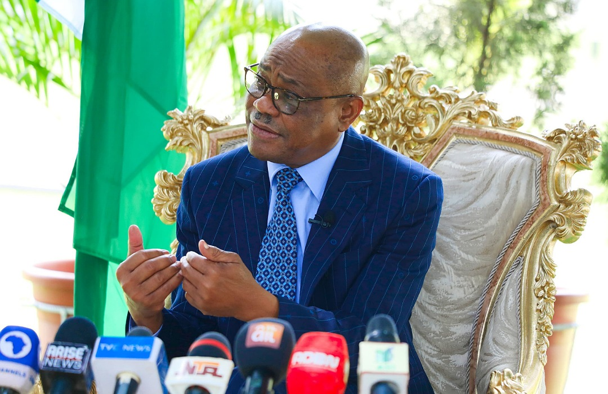

Nigeria Politics · 22 Sep 2026
Oyo Governor Makinde Refutes Wike's Claim on N50bn Ibadan Airport Funding

Oyo State Governor Seyi Makinde has publicly contradicted statements made by Federal Capital Territory Minister Nyesom Wike regarding financial allocations for the Ibadan airport upgrade, stating that the Federal Government did not provide N50bn for the project.
Oyo State Governor, Seyi Makinde, has formally rejected assertions made by the Minister of the Federal Capital Territory, Nyesom Wike, concerning financial support for infrastructure development in the state. The disagreement centers on claims regarding funding for the Ibadan airport upgrade, which have drawn public attention amid broader political discourse involving the FCT minister (Source: The Reporter).
According to the details emerging from the exchange, Governor Makinde disputed the narrative that the Federal Government injected N50bn into the airport project. The rebuttal highlights growing scrutiny over public statements made by federal officials regarding state-level infrastructure projects and intergovernmental financial interventions (Source: Punch Newspapers).
As this public disagreement continues to unfold, observers note that further clarifications from both the Federal Capital Territory administration and the Oyo State government will be essential to resolve the conflicting accounts regarding the funding and execution of the regional upgrade project.
Sources
This article was produced by the C. O. Eric AI Newsroom from the cited sources. It is published only after automated evidence and safety checks.